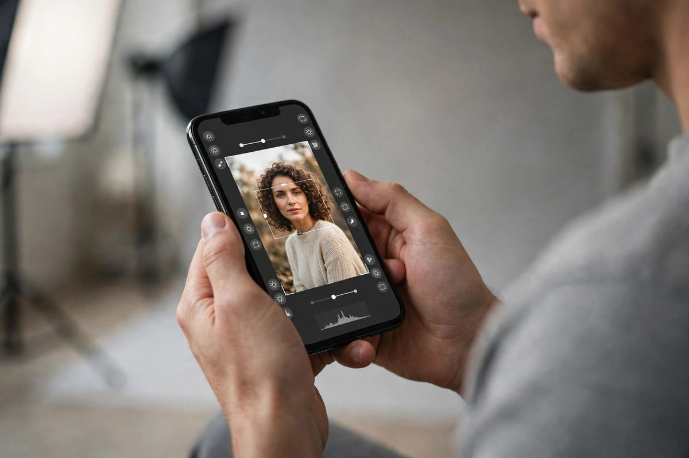

Lightroom Premium vs Free: What Do You Actually Get?

What the free version gives you
The free version of Adobe Lightroom for mobile is far more capable than many people expect. You get the core editing tools that shape most photos: exposure, contrast, highlights, shadows, whites, blacks, temperature, tint, vibrance and saturation. You can crop, straighten and rotate, adjust the colour of individual hues, add vignettes and grain, and apply a range of built-in presets. For a casual photographer who edits a few photos a week, this set of tools covers nearly everything.
You can also import and edit raw photos in the free version, which is a big advantage over many other free editors. Raw files hold far more detail than JPEGs, so you can recover shadows and highlights that would be lost in a compressed photo. If your phone shoots raw, the free version alone can produce results that look professional.
The healing brush and why it matters
The most talked-about premium feature is the healing brush. It lets you tap on a small distraction in a photo, such as a spot on a face, a stray wire or a speck of dust, and paint it away. Lightroom samples the nearby pixels and fills the area so the repair blends naturally. Without it, you have to crop the distraction out or accept it, which is not always possible.
This single tool is the reason many portrait and product photographers pay for premium. If you regularly photograph people, the healing brush saves real time. If you mostly edit landscapes or food photos, you may rarely miss it, because those images usually have fewer small flaws that need removing.
Masking and selective edits
Premium also unlocks masking, which lets you edit one part of a photo without touching the rest. You can select the sky and darken it, brighten only a person's face, or add warmth to a subject while keeping the background cool. Lightroom can detect subjects, skies and backgrounds automatically, which makes masking fast even on a phone screen.
The free version does not offer this level of control. You can apply adjustments to the whole photo only, which means brightening a dark face also brightens the background. Masking is the feature that separates quick social media edits from careful, polished work, so it matters most to people who edit portraits, weddings or product photos for clients.
Batch editing and workflow tools
If you edit many photos at once, premium saves a lot of time. Batch editing lets you copy the edits from one photo and paste them onto many others in a single step. This is essential after a shoot where dozens of photos were taken in the same light and need the same corrections. Premium also includes perspective correction, which straightens leaning buildings in architecture photos, and the geometry tools that fix tilted horizons precisely.
Free users can still copy edits between photos one at a time, but the process is slower. For someone editing a handful of photos, that is fine. For someone returning from a wedding with hundreds of images, batch editing alone can justify the subscription.
Cloud storage and sync
Premium includes cloud storage, which keeps your photos and edits backed up and synced between your phone, tablet and computer. If you switch devices, your work follows you. Free users can still use the app on one device, but their photos are stored locally, so losing or breaking the phone means losing the edits.
The amount of storage depends on the plan you choose, and the price varies by country. Before subscribing, check the current price in your local app store and think about how much you actually need. If you already back up your photos with another service, the storage alone may not be worth paying for.
So is premium worth it?
Premium is worth it if you edit portraits or client work regularly, need masking or the healing brush, or process large batches of photos. It is less useful if you edit a few photos a week for yourself, because the free tools already cover the basics well. The best approach is to spend a month using only the free version and notice which locked features you actually reach for. If you keep hitting the same locked tool, that is your answer. If you never notice the locks, save your money.
Whatever you decide, get premium through the official app only. Modified copies that claim to unlock premium for free are not a safe shortcut: they can carry malware, steal your login details, stop working after an update, and get your Adobe account restricted. The honest choice is free, or paid through Adobe.
Frequently Asked Questions
Can I use Lightroom free forever?
Yes. The free version of the official Lightroom mobile app has no time limit, and you can keep using it for as long as you like without paying.
Does premium include Photoshop?
Some Adobe plans bundle Lightroom with Photoshop and desktop apps, while the mobile-only premium plan does not. Check the plan details in your app store before subscribing.
Will my edits disappear if I cancel premium?
No. Your photos and edits stay on your device, but premium tools such as masking will be locked again, and you will lose access to the premium cloud storage.
Download Lightroom — Official App
Get the official Adobe Lightroom app free from your app store. Avoid modified APK files from other websites — they can contain malware and are not supported by Adobe.